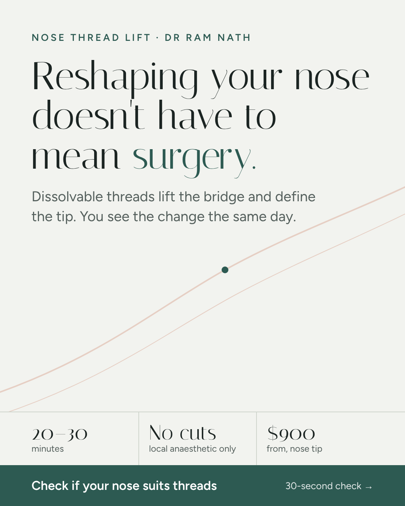
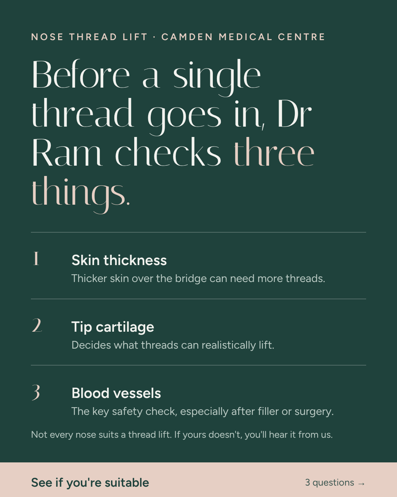
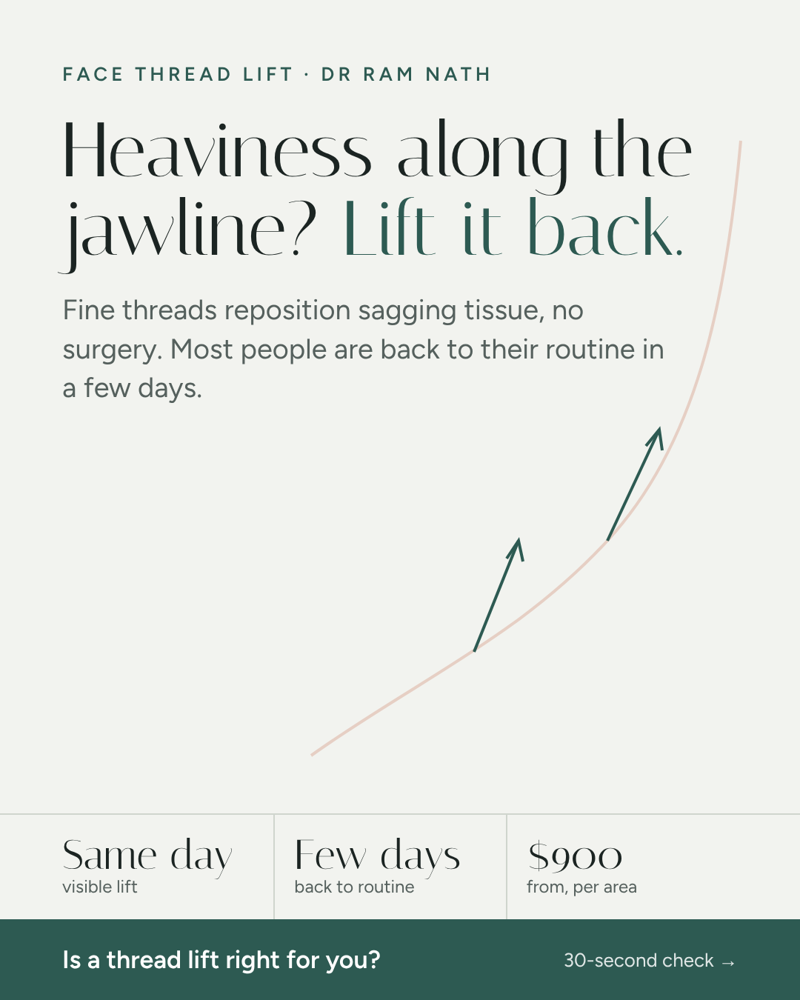
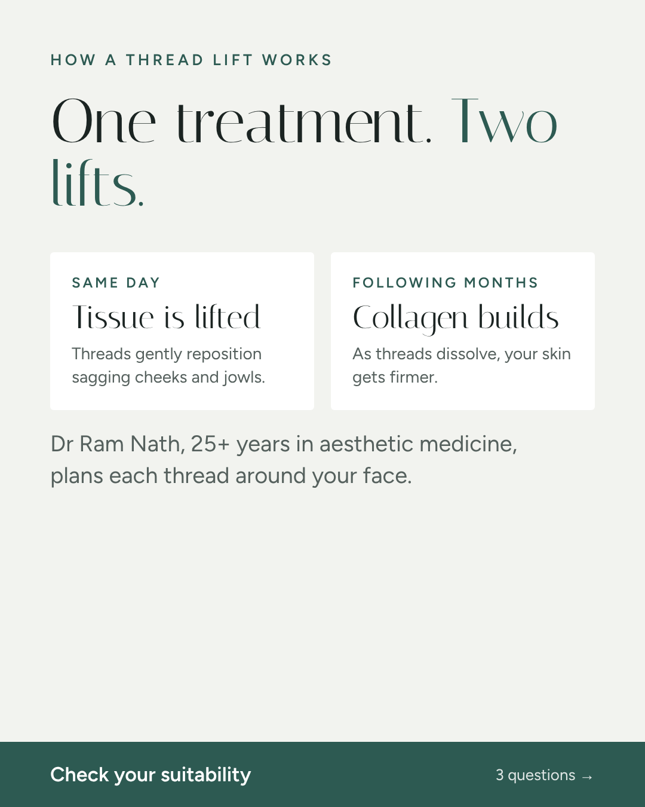
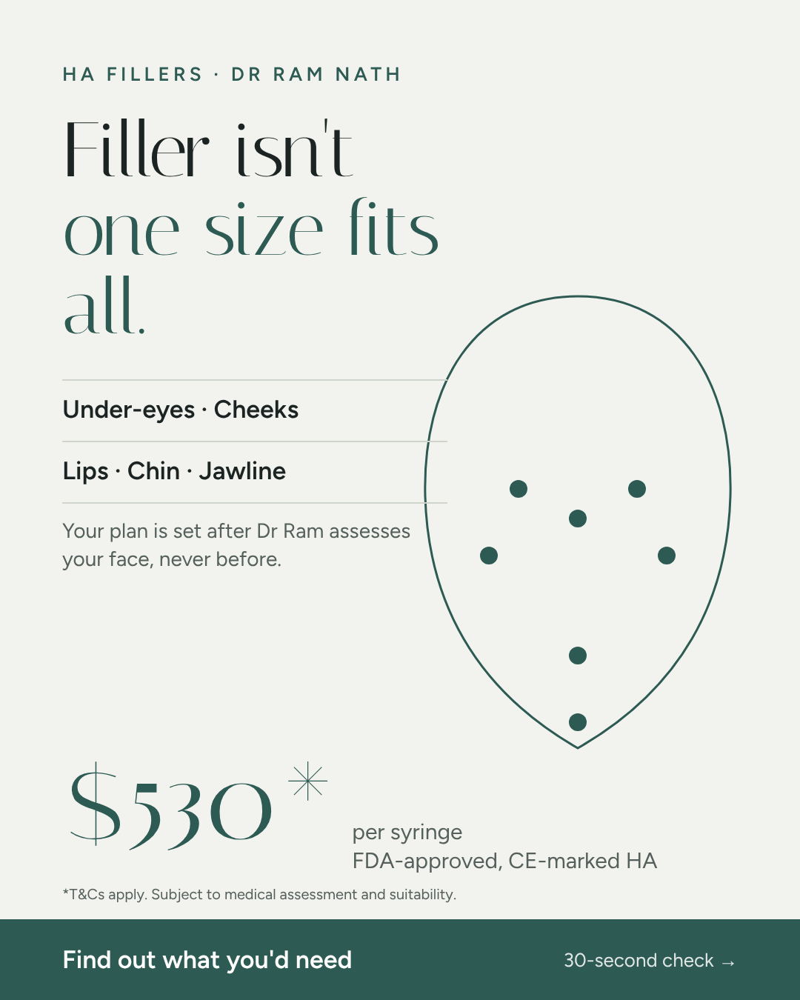
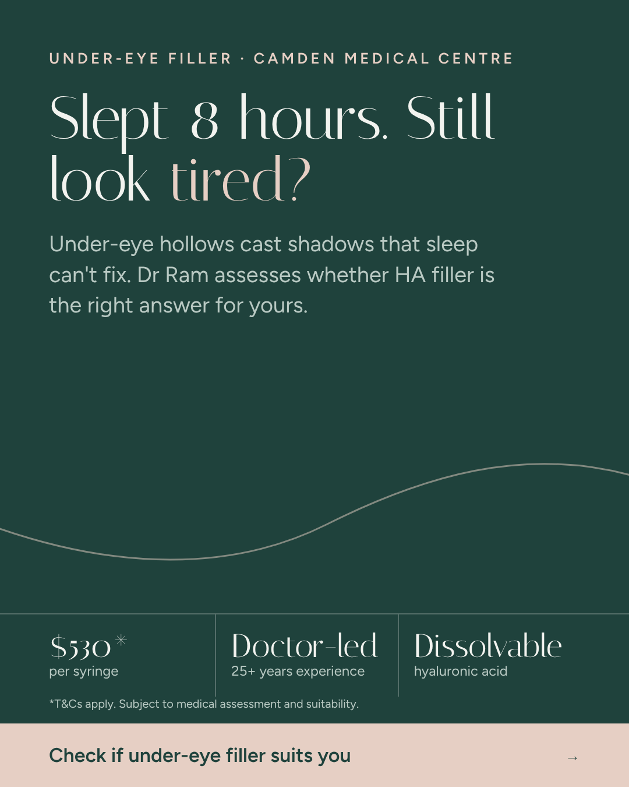

PULSE Digital · Line Aesthetics Clinic
All three campaigns use click-to-WhatsApp, so the result below is a WhatsApp conversation started. Same creative across different ad sets is grouped into one row.
| Creative | Spend | Chats | Cost / chat | CTR | Read |
|---|---|---|---|---|---|
| Non-Surgical Nose EnhancementNose ad set, live since ~5 Oct, CPM $20 | $1,230 | 180 | $6.83 | 2.54% | Scale |
| Heaviness JawFace, 3 ad sets | $11,006 | 507 | $21.71 | 2.8–3.0% | Keep, new hooks |
| Biggest MisconceptionFace, 3 ad sets | $7,938 | 286 | $27.75 | 3.1–3.5% | Refresh |
| How Does Thread Lift Work?Face, 3 ad sets, CPM $86–93 | $6,392 | 206 | $31.03 | 3.4–3.9% | Refresh |
| Other nose videosNot Permanent, Asian Nose, Who Is Suitable | $287 | 8 | $35.87 | 2.9–3.7% | Too early |
| HA Promo statics C1–C3HA Fillers Promo, Oct 2026 | $618 | 12 | $51.48 | 1.3–3.6% | Replace |
| Skin Booster video + carouselCampaign paused | $12,331 | 261 | $47.25 | 0.9–1.9% | Paused |
The nose ad set is running at roughly a third of the face cost per chat, mostly because its CPM is $20 against $64 to $93 on the face ad sets. Treat it as an early read. It has had about a week and a reach of under 30,000, so expect cost per chat to drift up as frequency builds.
The thread lift campaign has a frequency of 5.1 over 90 days and the same three face videos have carried it since April and May. Click-through is still healthy, so the angles work. What's tired is the opening seconds, which is the cheapest thing to replace.
The bigger leak is after the click. The thread lift campaign recorded 69 leads from 1,187 chats, about 1 in 17, which works out to $389 per lead. I'm reading "leads" as the chats the clinic marked as a lead in WhatsApp; worth confirming with the front desk how they tag them. Either way, most chats are not turning into consults, which is what the landing pages are built to change.
The Meta Ad Library shows what's running, not how it performs, so the global read comes from ads that clinics in the US, UK, Korea and Australia keep live for months (usually a sign they're paying off) plus Line's own numbers above. These are the patterns that show up again and again:
A lot of the strongest overseas aesthetics ads lean on before-and-after photos and patient testimonials. Singapore's rules for medical clinic advertising don't allow those, and neither do superlatives like "best" or promised results. Meta also restricts before-and-after imagery for cosmetic procedures. So everything here is built on Dr Ram's authority, the mechanism, honest suitability and price. That's also the space competitors leave open, since most of them run discount-led offers.
Videos are scripted for Dr Ram to camera, 9:16, burned-in captions, 20 to 40 seconds, with the first line of on-screen text matching the spoken hook. Statics are ready to upload in 4:5 for feed and 9:16 for Stories and Reels.
Keep the body of Non-Surgical Nose Enhancement. Test these first lines: "Your nose bridge can go up without a single cut." / "I do this in 30 minutes, and you go back to work tomorrow." / "Thinking about rhinoplasty? Watch this first."
CTA: "Tap below to check if your nose is suitable."
"Should you use threads or filler on your nose? It depends on one thing."
CTA: "Answer 3 questions and I'll tell you which fits."
"Most nose thread lift techniques weren't designed for an Asian nose."
Good footage, only $96 spent. Re-edit with this hook and give it a fair budget.
"Your jawline didn't disappear. It moved." / "Look tired in photos but fine in the mirror? It's often your cheeks dropping." / "Jowls often come from tissue that's slipped down, not weight."
Body unchanged. Run all three in the Luxury ad set where Heaviness Jaw already wins.
"Thread lift or HIFU? Here's how I decide for my patients."
CTA: "Not sure which you need? Three questions, link below."
"Here's what the first week after a thread lift really looks like."
Downtime is the objection the top ad answers, so lean into it. Dr Ram explains; no patient footage.
"Slept eight hours and still look tired? It might not be tiredness."
CTA: "$530 per syringe. Check if under-eye filler suits you."
"The most common thing I hear: I don't want to look overdone."
CTA: "Tell me which area bothers you most."
"Sometimes the right amount of filler is none."
Builds trust and feeds the thread lift funnel too.






9:16 versions of each sit in the same folder with a -9x16 suffix.
One page per treatment. Each asks three questions with tap-to-answer buttons, then name and mobile, then opens WhatsApp to the clinic with everything typed in. The patient only has to press send.
The ref code at the end tells the front desk which page the chat came from, and picks up the ad name automatically if the ad URL carries utm_content. Someone who answers "previous surgery" and "within 2 weeks" can be prioritised before they've typed a word.
Each page fires a Meta Lead event when the form is sent, plus custom QuizStart and QuizStep events, so a website campaign can optimise for people who finish the quiz rather than people who click.
pixelId).webhook) so leads are logged even if someone never hits send in WhatsApp.Week 1. Shift part of the face budget into the nose ad set and raise it in steps of about 20% every two or three days while cost per chat stays under $12. Upload the new face openings into the existing thread lift ad sets so they inherit learning.
Weeks 1 to 2. Launch one new campaign with the Leads objective, conversion location website, optimising for the Lead event, sending to the three landing pages. Give it around 20% of thread lift spend and keep click-to-WhatsApp running beside it. Use the new videos and statics in both so the creative isn't what's being compared.
Week 3. Compare the two routes on booked consults, not chats. If the landing pages bring fewer chats but more consults per dollar, move budget across. HA fillers move to video as soon as Dr Ram's footage is shot, and the current statics come off once the under-eye video has spent around $300.
Booked consults need the clinic's help: ask the front desk to note the ref code for each chat that turns into a booking. A shared sheet is enough.